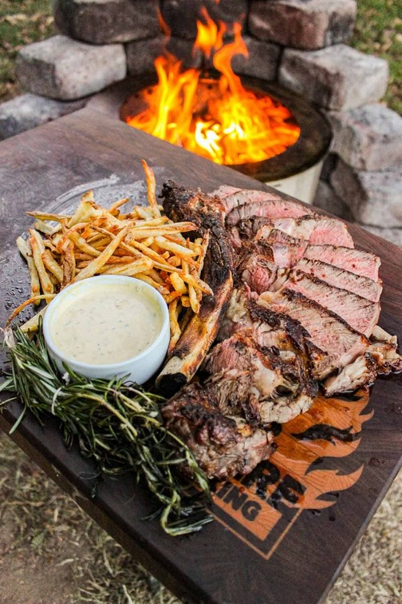

Grilled Ribeye with Beef Tallow Fries

Description
Basted in garlic infused beef tallow with a herb brush, grilled over hot coals and paired with french fries - this epic Grilled Ribeye with Beef Tallow Fries is so freakin good!
It's sure to be one of your new favorite recipes! If you've been craving steak, you can't beat the flavor of this grilled ribeye!
Ingredients
Steak:
- Bone in Ribeye
- Kosher Salt, to taste
- Canola Oil (this will help us develop a nice crust on the steak)
Baste:
- Wagyu Beef Tallow from South Chicago Packing (for enhanced flavor)
- Whole Garlic Cloves, smashed
- Rosemary Sprigs (for the herb brush)
- Thyme Sprigs (also for the herb brush)
Beef Tallow Fries: (you can always opt for a side of mashed potatoes if that's more of your jam)
- Russet Potatoes, cut into fries (depending on if you opt for thin fries or fat fries you might have to adjust the cooking time)
- Wagyu Beef Tallow from South Chicago Packing
Garlic Peppercorn Aioli
- Fresh Egg
- Olive Oil
- Pressed Garlic (because we all love garlic)
- Lemon Juice (for tanginess)
- Freshly Cracked Black Pepper
- Kosher Salt